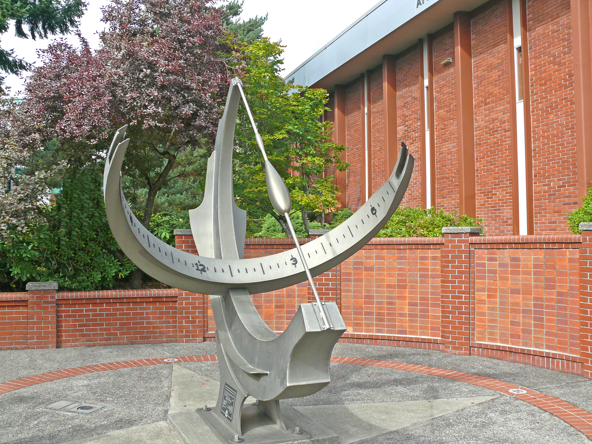

Tom Laidlaw was a man of many hobbies. Most all of them included some form of crafting, learning, performance, or a combination thereof. One of his more enduring (and endearing) hobbies was that of sundial making. He made over a dozen, out of things like globes, skateboards, sticks in the ground. In honor of the old fart, our first challenge for you this year is to make a sundial. It can be as functional, pretty, or appropriate as you'd like. Hopefully you learn something in the process!
At the end of the period you will submit pictures (or video!) of your creation, and then we'll vote as a group for our favorites.